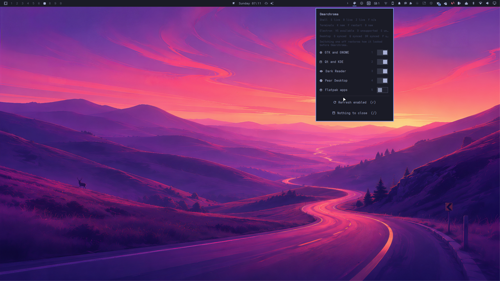
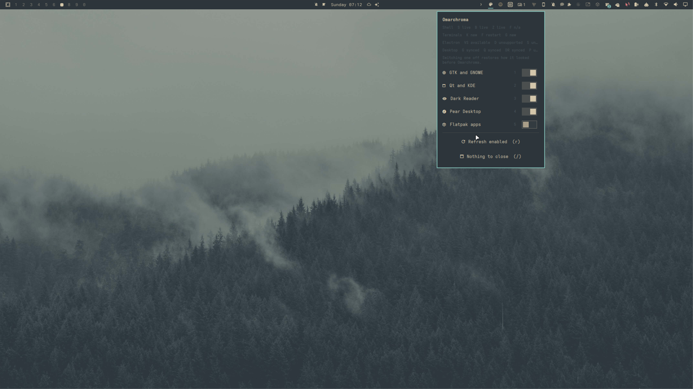

One palette. Every surface.
nixarchy-omatheme connects declarative NixOS configuration with the rebuild-free theme switching of Omarchy. Stylix can keep defining the application templates; the runtime engine changes the active palette everywhere at once.
$ nixos-rebuild switch --flake .
$ omarchy theme set everforest
✓ palette updated
✓ applications notifiedNixOS integration
Enable one module in the system flake. It installs the runtime engine, daemon, Omarchy menu plugin, and application hooks for the configured user.
programs.nixarchyThemeEngine = {
enable = true;
user = "olafkfreund";
};Apply it once with the normal NixOS workflow. After that, changing a theme is a runtime operation and does not require another rebuild.
Stylix is the template
When Stylix is present, it remains the declarative source for the application settings it supports. nixarchy-omatheme adds mutable runtime imports and reload hooks at the ownership boundary.
Stylix defines the reproducible shape. Omarchy owns the active palette and the live reload event.
When Stylix is absent, the same module uses the runtime engine’s renderers. This keeps the path suitable for the Nixarchy offline ISO without making Stylix a requirement.
Runtime targets
The current bridges cover GTK, Qt/KDE, Dark Reader, Pear Desktop, Starship, Bash, Zsh, Fish, Alacritty, Kitty, Foot, Ghostty, and opt-in Flatpak support. VS Code is available through an opt-in Electron adapter.
programs.nixarchyThemeEngine.electron.apps.vscode.enable = true;Setup and ownership
Use programs.nixarchyThemeEngine in a NixOS flake. The default mode detects whether the Stylix module is imported; set stylix.mode = "runtime" for a Stylix-free system or "stylix" to require it.
Generated configuration stays declarative. Runtime files live under ~/.config/omarchy/runtime/ so application reloads do not fight Home Manager ownership.
Alacritty receives the same ownership transition when its generated file is a Home Manager or Stylix symlink. The activation copies the generated contents to a user-owned runtime file before theme hooks run.
Switch once. See it everywhere.
Captured on a Razer desktop with the Omarchroma panel, a running daemon, and a rebuild-free Tokyo Night → Everforest switch.

